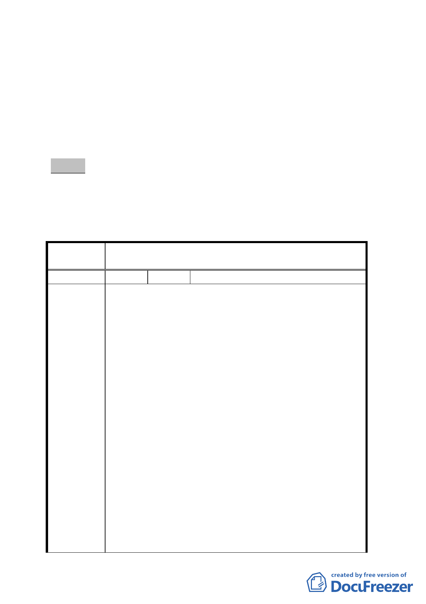

送到會。
四、申請單位：陳麗陽。
五、辦理單位：臺北市政府。
六、法令依據：都市計畫法第 66 條、都市更新條例第 5 條、第 6
條、第 8 條、第 11 條及臺北市都市更新自治條例第 15 條。
七、本更新單元劃定業經市府審查符合「臺北市都市更新自治條
例」劃定基準及環境評估標準。
決議：
一、本案更新單元劃定範圍照案通過。
二、公民或團體所提意見審決如後附綜理表。
臺北市都市計畫委員會公民或團體所提意見綜理表
案
名
劃定臺北市松山區延吉段一小段 585 地號等 7 筆土
地為更新單元
編 號 １ 陳情人 王瑞真等四人
我們是臺北市松山區延吉段一小段603地號土地上建築
物、土地的所有權人，台北市政府都發局於98年7月28日以
北市都新字第09830919800號函覆「耕薪都市更新股份有限
公司」，同意其於98年7月16日受託申請之「臺北市松山區
延吉段一小段585地號等7筆土地自行劃定更新單元案」。
其中，國有土地面積占申請面積超過 500㎡，比例超過
70%， 私有土地面積不足30%(詳附表)，依「都市更新事業
範園內國有土地處理原則」 (財政部98年8月3日台財產改
陳 情 理 由 字第09850003574號令修正)第三點第二項：「都市更新單
元範圍內之國有土地 (含公用土地及非公用土地)面積合
計達五百平方公尺，且占該都市更新單元土地總面積二分
之一以上者，得專案報經財政部核定，由主辦機關主導辦
理都市更新。」。依前所述，該案應由財政部國有財產局
主導辦理，今台北市政府都發局同意私人申請，顯與「都
市更新事業範圍內國有土地處理原則」相悖，請貴單位酌
參、慎思。
再者，陳情案所在八德路三段106巷、158巷，光復南路46
- 14 -